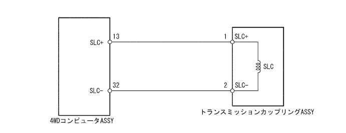
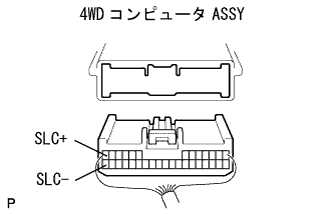

DTC C1298/98 Linear Solenoid Malfunction |
| DTC No | DTC Detection Condition | Inspection Area |
|---|---|---|
| C1298/98 | With IG1 voltage 9.5V or more and linear solenoid SLC command current 0A or 0.8A or more, an open or short circuit in the linear solenoid continues for 1 seconds or more |
|

| Step 1 | Inspect Transmission Coupling Assembly |
Turn the IG OFF and disconnect the transmission coupling assembly connector.
Using SST (Toyota electrical tester), measure the resistance between the terminals of the transmission coupling assembly.
| Tester Connection | Condition | Standard |
|---|---|---|
| 1(SLC+) - 2(SLC-) | Always | 2.2 - 2.6Ω |
|
| ||||
| OK | |
| Step 2 | Inspect Wire Harness and Connector (4WD Computer Assembly - Transmission Coupling Assembly [Linear Solenoid SLC]) |
for reference. |
Connect the transmission coupling assembly connector and disconnect the 4WD computer assembly connector.
Using SST (Toyota electrical tester), measure the resistance between the vehicle side connector terminals of the 4WD computer assembly, and between the vehicle side connector terminals and body ground. (For Terminals of ECU, see)
| Terminal No. | Condition | Standard |
|---|---|---|
| 13(SLC+) - 32(SLC-) | Always | 2.2 to 2.6Ω |
| 13 (SLC+) - Body ground | Always | 10k Ω or higher |
| 32 (SLC-) - Body ground | Always | 10k Ω or higher |
|
| ||||
| OK | ||
| ||